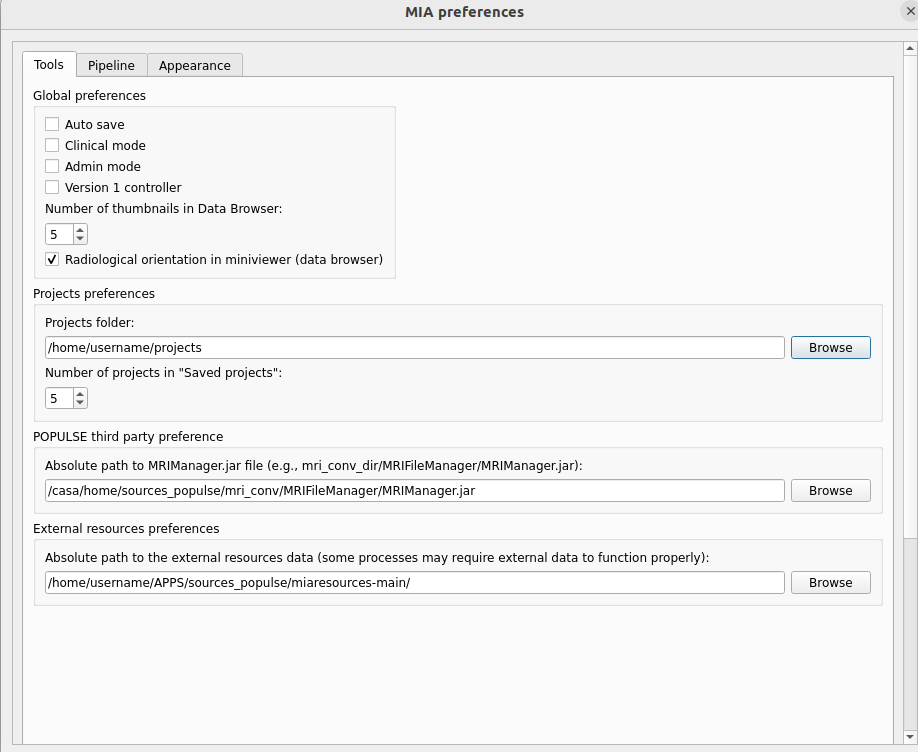
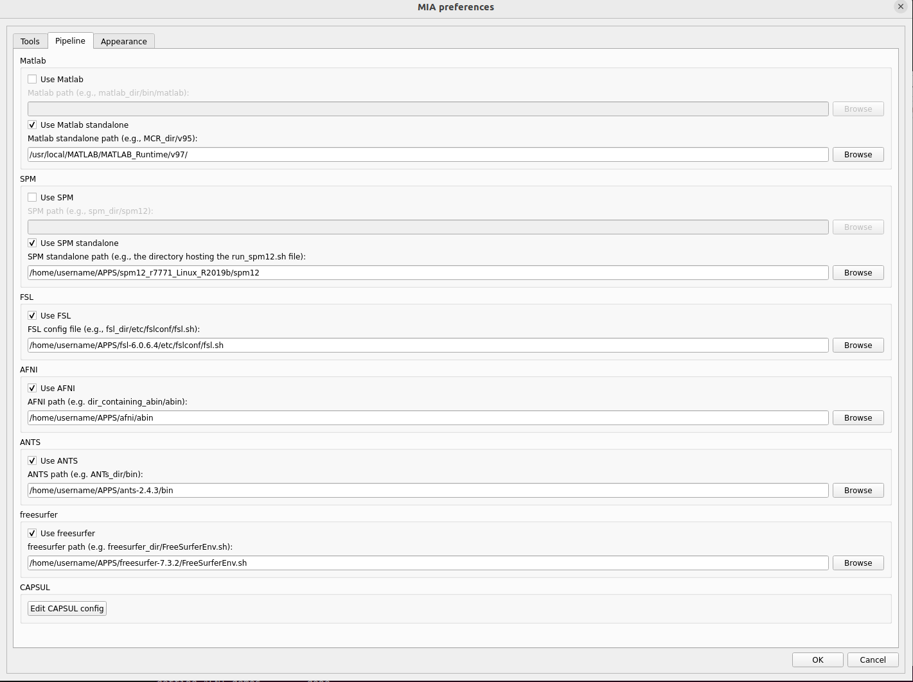
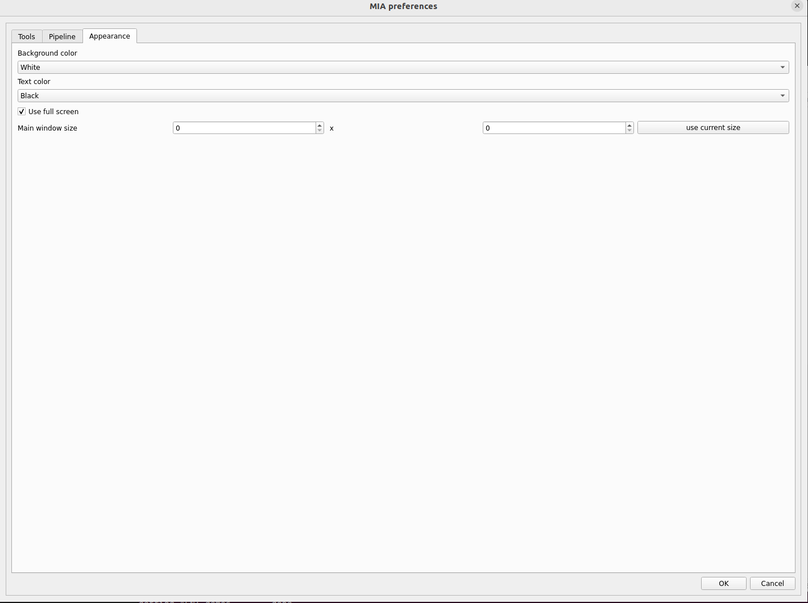

Populse_mia’s preferences¶
This page is a user guide for populse_mia’s preferences.
Access these preferences by going, when populse_mia is launched, to File > Mia preferences
Software presentation¶
Populse_MIA’s preferences are composed of three tabs:
- Tools
Global preferences
- Pipeline
Matlab and SPM configuration
- Appearance
Software’s appearance
Tools¶
Global preferences¶
- Auto save
When auto save is enabled, the project is saved after each actions done in the Data Browser.
- Clinical mode
When user mode is enabled, more default tags (ex. Age, Sex, Pathologie, etc.) are stored in the database and the process library is disabled (no pipeline creation).
- Admin mode
Get extended rights (delete projects, processes, etc.).
- Version 1 controller
Use Capsul controler version 1 (Should be soon delated)
- Number of thumbnails in Data Browser
Set number of thumbnails wanted in Data Browser
- Radiological orientation in miniviewer (data browser)
Use radiological orientation in MRIConv (data browser)
Projects preferences¶
- Projects folder
Sets the folder where the projects are stored.
- Number of projects in “Saved projects”
Sets the number of the visualized projects under “Saved projects” action of the menu bar.
POPULSE third party preferences¶
- Absolute path to MRIManager.jar
- Sets the path to the executable file of MRI File Manager (usually stored in the “MRIFileManager” folder next to “populse_mia” install path, if populse_mia was installed in user mode).
e.g. /home/ArthurBlair/.populse_mia/MRIFileManager/MRIManager.jar
External ressources preferences¶
Absolute path to the external resources data: some processes may require external data to function properly (as TPM.nii for SPM or template): * MiaResources folder that contains the resources needeed to use populse_mia and mia_processes in some cas( ROI, templates, ect ..) * Sets the path to the external resources data (MiaResources)
Pipeline¶
Third-party softwares configuration. If you want to use thrid-party softwares, we nee to install them first.
Matlab¶
- Use Matlab
Enable it if you want to use Matlab (license or compiled version).
- Matlab path
- Sets the path to Matlab’s executable
e.g. for linux - macOS:
/usr/local/MATLAB/R2018a/bin/matlabe.g. for Windows 10:
C:/Program Files/Matlab/R2019a/bin/matlab.exe
- Matlab standalone path
- Sets the path to Matlab’s compiled version folder
e.g. for linux - macOS:
/usr/local/MATLAB/MATLAB_Runtime/v97/e.g. for Windows 10: Nothing to declare here if you use spm standalone!
SPM¶
- Use SPM
Enable it if you want to use SPM12 (license version).
- SPM path
- Sets the path to SPM12 folder
e.g. for linux - macOS:
/usr/local/SPM/spm12e.g. for Windows 10:
C:/Program Files/Matlab/spm12
- Use SPM standalone
Enable it if you want to use SPM12 (standalone version).
- SPM standalone path
- Sets the path to SPM12 standalone folder
e.g. for linux - macOS:
/usr/local/SPM/spm12_standalone(folder containing run_spm12.sh)e.g. for Windows 10:
C:/Program Files/Matlab/spm12_r7771/spm12(with Windows 10, it is not necessary to declare the above Matlab standalone path in this case!)
FSL¶
- Use FSL
Enable it if you want to use FSL.
- FSL path
Sets the path to the FSL config file (/fsl_directory/etc/fslconf/fsl.sh).
AFNI¶
- Use AFNI
Enable it if you want to use AFNI.
- AFNI path
Sets the path to the AFNI abin folder (/dir_contening_abin/abin).
ANTS¶
- Use ANTS
Enable it if you want to use ANTS.
- ANTS path
Sets the path to the ANTS bin folder (/ants_dir/bin).
freesurfer¶
- Use freesurfer
Enable it if you want to use freesurfer.
- freesurfer path
Sets the path to the FreeSurferEnv.sh file (/freesurfer_dir/FreeSurferEnv.sh).
Appearance¶

- Background color
Changes the Populse_MIA’s background color.
- Text color
Changes the Populse_MIA’s text color.
- Use full screen
Use full screen.
- Main window size
Change main window size